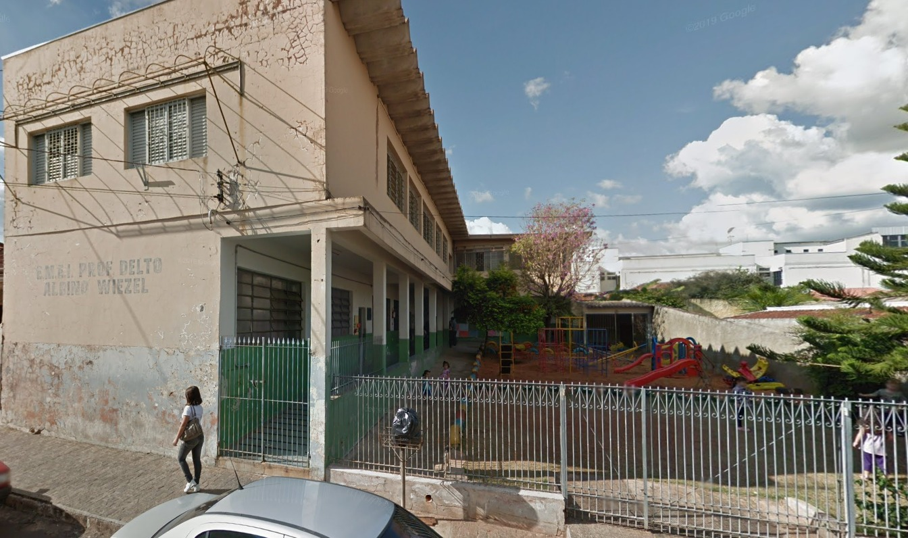
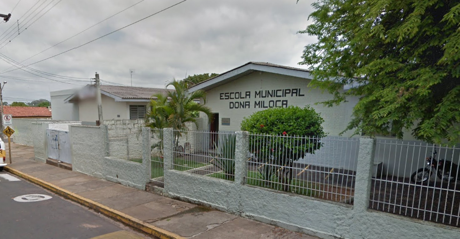
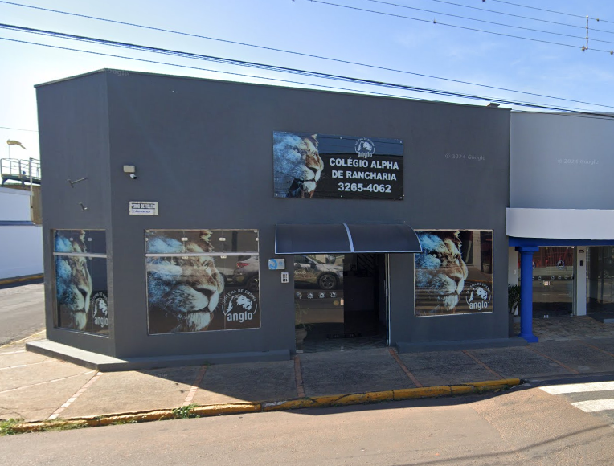
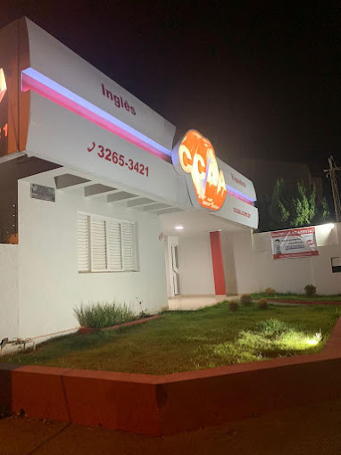
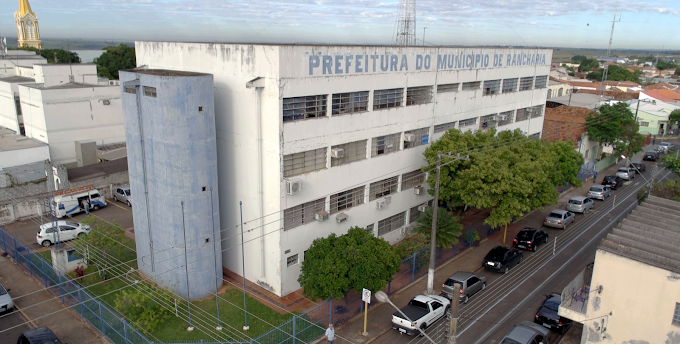

- Nome: Fellype Luz e Silva
- Idade: 18 anos
- Cursando: Sistema de informação
- Cidade: Rancharia
- Graduação: Curso avançado de inglês

- Rancharia é a cidade onde nasci, e que moro até hoje, localizada no interior do estado de São Paulo, Rancharia é uma cidade pequena, mas cheia de charme e história. Fundada em 1930, ela faz parte da região do Oeste Paulista e tem uma população amigável que valoriza suas tradições e o espírito comunitário. Conhecida também como a capital do algodão.

Aqui foi a primeira escola que eu estudei,
chamada Emefei Prof. Delto Albino Wiezel.
Pré 1, pré 2 e o 1° ano.

Depois do Delto, entrei na escola Dona Miloca,
onde fiz todo o meu ensino fundamental 1.

Logo em seguida fui para o colegio
Alpha, onde estudei todo o meu ensino fundamental 2.

E a ultima escola que frequentei, fazendo apenas
o ensino médio foi a ETEC do centro Paula Souza.
 Fiz 5 anos de inglês nessa escola de idioma,
CCAA. Terminei o curso no segundo semestre de 2022. Não me considero
fluente cem por cento ainda, porém tenho uma grande noção falando e ouvindo.
CCAA. Terminei o curso no segundo semestre de 2022. Não me considero
fluente cem por cento ainda, porém tenho uma grande noção falando e ouvindo.
Atualmente trabalho como estagiário na prefeitura de Rancharia, dentro do setor de informática, arrumando computadores de escolas, e outros setores da cidade como a guarda municipal, camara municipal e setores dentro da própria prefeitura.

Uma das coisas que eu mais gosto de fazer é ir para a academia.

Outra coisa que gosto muito é ouvir musica e ir em festivais,
onde vai muitos cantores que gosto muito.